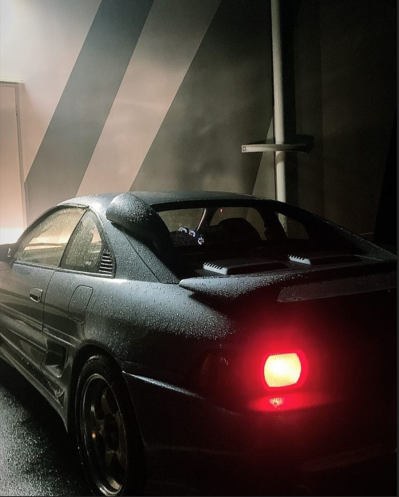

SECOND GENERATION
In 1989, the MR2 underwent a significant transformation.
The new SW20 iteration boasted a larger, more luxurious cabin,
sacrificing some weight for increased passenger comfort.
This was balanced by upgrades to the engine and drivetrain for
continued performance. Toyota remained dedicated to the MR2's
handling prowess, refining the suspension with input from racing
experts. The SW20's design also took a turn, adopting sleeker, more
rounded lines that drew comparisons to Ferraris, earning it nicknames
like "baby Ferrari" or "poor man's Ferrari." While rumors of a powerful
V6 version to rival the Ferrari 348 swirled during development, Toyota
ultimately stuck with a four-cylinder engine, suggesting a potential V6
might find its home under the Lexus brand. Overall, the 1989 MR2 redesign
offered an evolution, balancing luxury and performance.